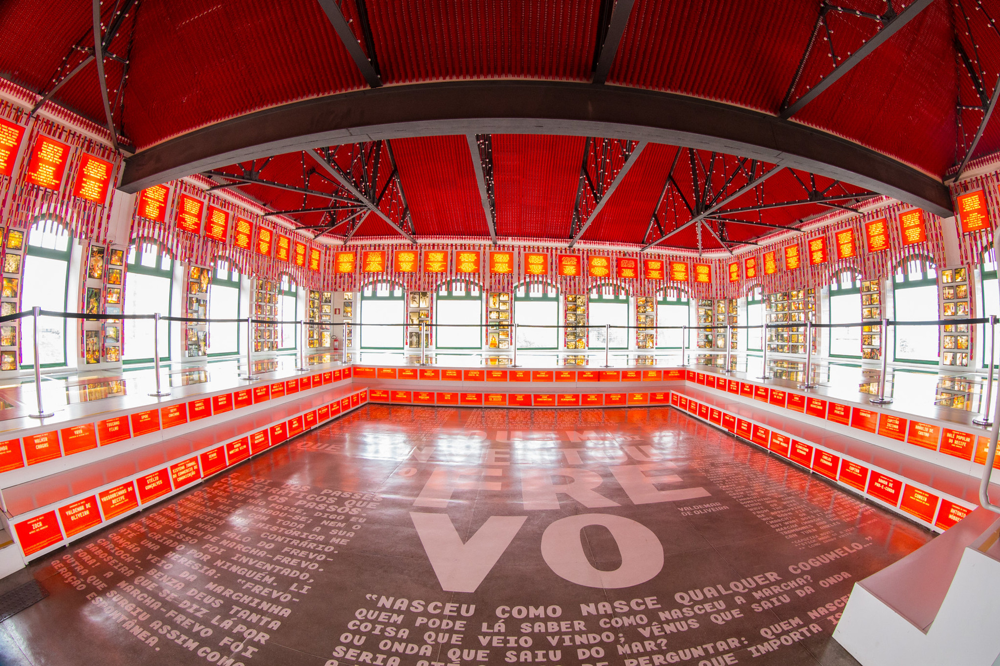
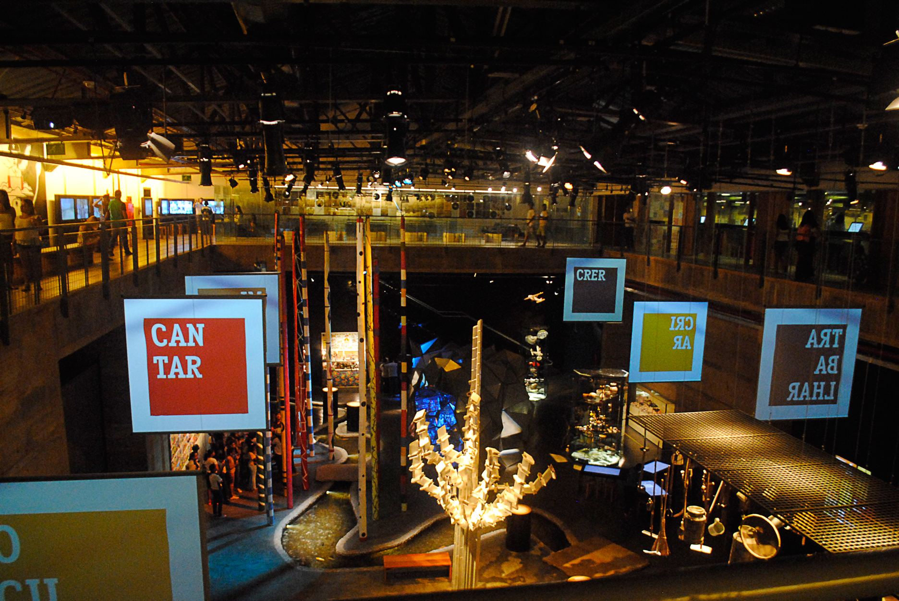
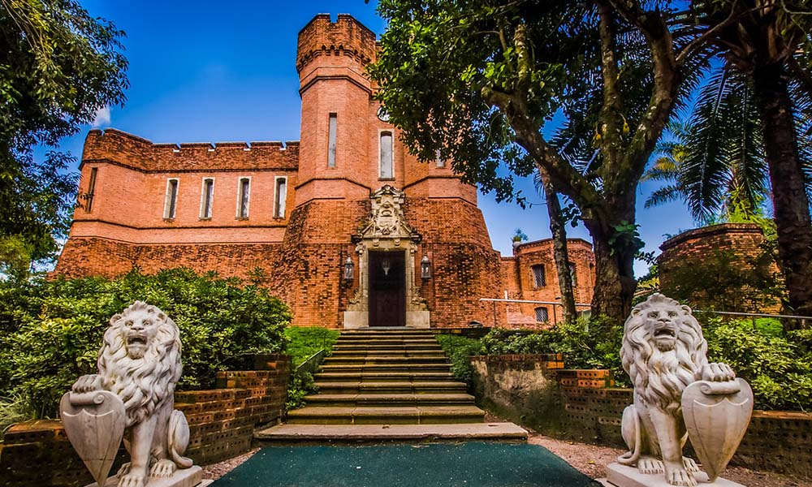

O Paço do Frevo é um espaço cultural dedicado à difusão, pesquisa, lazer e formação nas áreas da dança e música do frevo localizado na cidade do Recife, capital de Pernambuco, Brasil. Surgiu através de uma parceria entre a Prefeitura do Recife, a Fundação Roberto Marninho, o IPHAN e o Governo Federal.
Paço do frevo

Museu cais do Sertão

Dedicado a retratar e a festejar a cultura, a vida e a história do Sertão nordestino, o Museu Cais do Sertão homenageia a obra de um de seus maiores intérpretes, o cantor e compositor pernambucano Luís Gonzaga do Nascimento, conhecido como Rei do Baião. Inaugurado em 2014, é um espaço interativo que proporciona uma vivência dinâmica, divertida e vibrante aos visitantes. Localizado no antigo Armazém 10 do Porto do Recife, está entre os mais modernos equipamentos culturais do Brasil. Dividido em sete núcleos temáticos – Viver, Trabalhar, Ocupar, Cantar, Criar, Crer e Migrar – os ambientes trazem referências à aspectos e situações que acompanham a vida dos sertanejos.
Instituto Ricardo Brennand

Localizado nas terras do antigo engenho São João, no bairro da Várzea, ocupa uma área de 77.603 m² cercada por uma reserva de mata atlântica preservada.Possui uma das mais modernas instalações museológicas do Brasil, abrangendo um complexo de edificações constituído pelo Museu Castelo São João (museu de armas brancas), Pinacoteca, Biblioteca, Auditório, Jardins das Esculturas e uma Galeria para exposições temporárias e eventos.